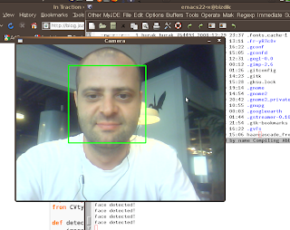

OpenCV, Python ile Yuz Takip Etme
OpenCV ve Python ile dinamik olarak yuz takibi kodlamak oldukca basit. Onceki kurulum paketlerine iki tane ek var, bunlar libcv-dev ve CVtypes adli ek kodlar. Bunlardan birincisini apt-get ile kurun, ikincisini indirin ve o dizini ayri tutmak istiyorsaniz sys.path.append('[CVTYPES DIZINI]') ile path eklemesi yapin (ya da test kodunuzla ayni yere koyun, size kalmis). Bundan sonra, ayrica, Haar Cascade dosyasi denen bir dosyayi alin, bunu test kodunuz ile ayni dizine koyun.
Guzel; simdi su kodu isletebilirsiniz.
import syssys.path.append('[benim cvtypes dizini]')
from CVtypes import cv
def detect(image):
image_size = cv.GetSize(image) # create grayscale version
grayscale = cv.CreateImage(image_size, 8, 1)
cv.CvtColor(image, grayscale, cv.BGR2GRAY) # create storage storage =
cv.CreateMemStorage(0) cv.ClearMemStorage(storage) # equalize
histogram cv.EqualizeHist(grayscale, grayscale) # detect objects
cascade = cv.LoadHaarClassifierCascade('haarcascade_frontalface_alt.xml', cv.Size(1,1))
faces = cv.HaarDetectObjects(grayscale, cascade, storage, 1.2, 2, cv.HAAR_DO_CANNY_PRUNING, cv.Size(50, 50))
if faces:
print 'face detected!'
for i in faces: cv.Rectangle(image, cv.Point(int(i.x), int(i.y)), cv.Point(int(i.x + i.width), int(i.y +i.height)),
cv.RGB(0, 255, 0), 3, 8, 0)
if __name__ == "__main__":
print "OpenCV version: %s (%d, %d, %d)" % (cv.VERSION, cv.MAJOR_VERSION, cv.MINOR_VERSION, cv.SUBMINOR_VERSION)
print "Press ESC to exit ..." # create windows
cv.NamedWindow('Camera', cv.WINDOW_AUTOSIZE) # create capture device device = 0 # assume we want first device
capture = cv.CreateCameraCapture(0)
cv.SetCaptureProperty(capture, cv.CAP_PROP_FRAME_WIDTH, 640)
cv.SetCaptureProperty(capture, cv.CAP_PROP_FRAME_HEIGHT, 480) # check
if capture device is OK if not capture: print "Error opening capture
device" sys.exit(1) while 1: # do forever # capture the current frame
frame = cv.QueryFrame(capture) if frame is None: break # mirror
cv.Flip(frame, None, 1) # face detection detect(frame) # display webcam image
cv.ShowImage('Camera', frame) # handle events k =
cv.WaitKey(10) if k == 0x1b: # ESC print 'ESC pressed. Exiting ...'
break

Yukarı